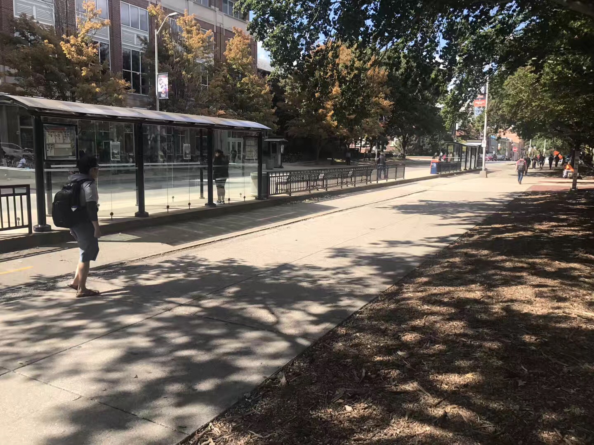

Hey, I am Tang Yiliu!
I am an undergraduate student at the University of Illinois at Urbana-Champaign.
Currently in Division of General Studies.
Will be transferring to Department of Computer Science.
Drop by my channel for some fun time!
I am an undergraduate student at the University of Illinois at Urbana-Champaign.
Currently in Division of General Studies.
Will be transferring to Department of Computer Science.
Drop by my channel for some fun time!

Ardent Reader. Literature is my favorite, Chinese and English.

Basketball Player. Represented my school to compete in several national tournaments.

Computer Programmer. Learning computer science. Learning to program.

Accredited Translator. English-Chinese. Chinese-English.
Having an objective in mind does not necessarily make things easier.
Not having one can make things tricky though.
The documentary The Plow That Broke the Plains depicts how the Great Plains rose and then fell due to poor agricultural planning and strategies.
At the beginning of the documentary, the Great Plains is characterized with several words – “wind, sun, treeless, no river, no stream, little rain.” These few words constitute the overarching issue – no matter how humans strive to shape the environment into their desired states, humans are always bounded by nature and her sporadic yet inexorable forces.

Bus stops at Champaign-Urbana feel slightly different.